Marvin contains a framework for integrating chemical computations into the drawing/viewing application environment. These tools - called plugins - are loaded dynamically upon request. ChemAxon provides various tools for calculating charge, pKa, logP, etc. The available calculator plugins are located in the Tools menu. The corresponding calculation parameters can be set in the parameter panel accessible from the Options submenu. Batch processing is available using Calculator.
Some plugins (Charge, Polarizability, Polar Surface Area and Hydrogen Bond Donor-Acceptor) optionally perform their computation on the major microspecies of the input molecule taken at a specified pH. This option together with the corresponding pH can also be set in the parameter panel.
Basic molecular values related to the elemental composition of the molecule are displayed by the Elemental Analysis plugin.
Mass: molecular mass
Exact mass: molecular mass calculated from the most frequent natural isotopes of the elements
Formula: chemical formula of the molecule
Isotope formula: chemical formula of the molecule listing isotopes separately
Dot-disconnected formula: chemical formula of the molecule separating fragment formulas by dots.
Composition: elemental composition (w/w %)
Isotope composition: elemental composition listing isotopes separately (w/w %)
Atom count: number of atoms in the molecule.
| 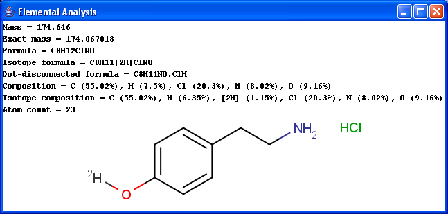 |
By default, molecules are handled separately if more than one molecules are drawn in the sketcher. However, sometimes a single molecule consists of more fragments (e.g. salt molecules), in which case the fragments should be treated as one molecule. This behavior can be reached by switching off the "Single fragment mode" option in the corresponding Options panel.
Most molecules contain some specific functional groups likely to loose or
gain proton under specific circumstances. Each ionization equilibrium between
the protonated or deprotonated forms of the molecule can be described with a
constant value called pKa. The pKa plugin
calculates the pKa values of all proton gaining or loosing
atoms on the basis of the partial charge distribution.
Learn more about how the plugin calculates pKa.
| 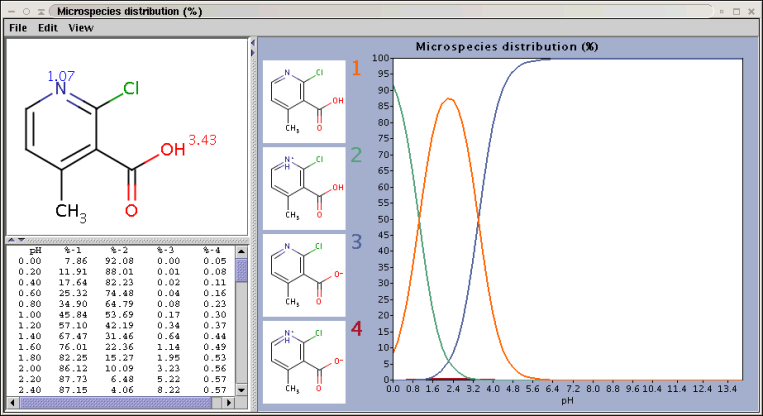 |
The chart shows the microspecies distribution curves by pH. The microspecies images are shown in the legend. When clicking on an image, the corresponding microspecies molecule is displayed in the upper-left viewer. The viewer can be detached from the chart panel by double clicking in it, or else by selecting Open Viewer from the View menu. The original molecule with the pKa values is shown when clicking on the chart outside of the legend image areas, or else when selecting pKa Values from the View menu.
The logP plugin calculates the octanol/water partition coefficient,
which is used in QSAR analysis and rational drug design as a measure of
molecular hydrophobicity. The calculation method is based on the publication
of Viswanadhan at al.1 The logP value of
a molecule is composed of the increment values of its atoms. Though,
logP is generally calculated for the neutral molecule forms only, this
plugin is able to handle ionic species as well, owing to the improved
algorithm.
Learn more about how the plugin calculates logP.
| 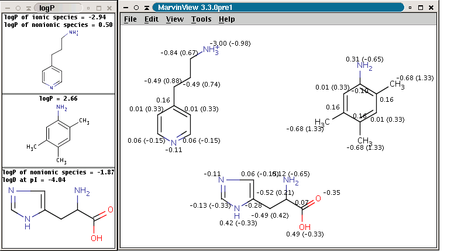 |
The panel on the right shows the logP increments for each atom. The numbers in brackets refer to the logP increment sums of implicit H atoms. This panel is displayed if Increments is selected from the Type listbox on the logP Options pane (this pane can be accessed by selecting logP from the Options submenu in the Options menu).
Compounds having ionizable groups exist in solution as a mixture of
different ionic forms. The ionization of those groups, thus the ratio of the
ionic forms depends on the pH. Since logP describes the hydrophobicity
of one form only, the apparent logP value can be different. The
octanol-water distribution coefficient2,
logD represents the compounds at any pH value.
Learn more about how the plugin calculates logD.
| 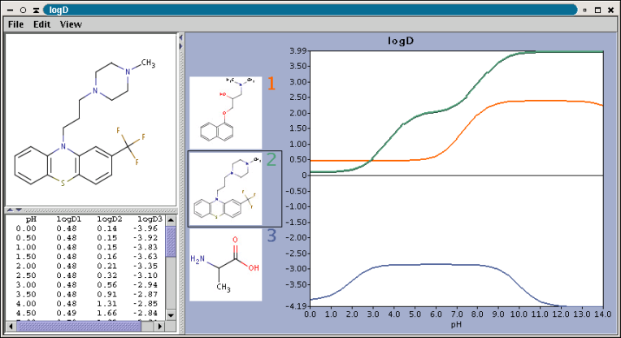 |
The chart shows the logD(pH) curves for each molecule drawn in the sketcher. The molecule images are shown in the legend. When clicking on an image, the corresponding molecule is displayed in the upper-left viewer. The viewer can be detached from the chart panel by double clicking in it, or else by selecting Open Viewer from the View menu. The reference logD values originally shown can be restored by either clicking on the chart outside of the legend image areas, or else by selecting logD at reference pH-s from the View menu.
Polar surface area (PSA) is formed by polar atoms of a molecule. It is a descriptor that shows good correlation with passive molecular transport through membranes, and so allows estimation of transport properties of drugs. Estimation of topoligical polar surface area (TPSA) is based on the method given in 4. The method provides results which are practically identical with the 3D PSA, while calculation time of TPSA is approximately 100-times faster. This method is more suitable for fast bioavailability screening of large virtual libraries.
| 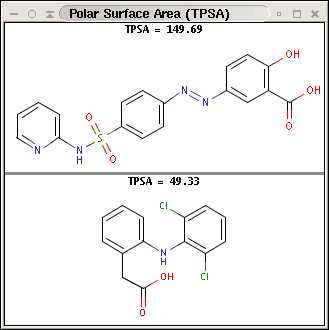 |
The partial charge distribution determines many physico-chemical properties
of a molecule, such as ionization constants, reactivity and pharmacophore
pattern. Use Charge plugin to compute the partial charge value of each atom.
Total charge is calculated from sigma and pi charge components, any of these
three charge values can be displayed.
Learn more about how the plugin calculates the partial charge.
| 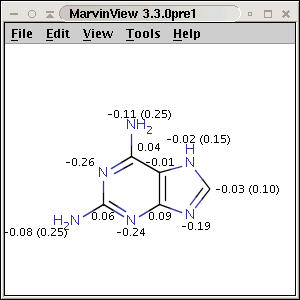 | 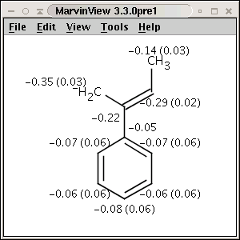 |
The numbers in brackets refer to the charge sums of implicit H atoms.
Localization energies L(+) and L(-) for electrophilic and nucleophilic attack at an aromatic center are calculated by the Hückel method. The smaller L(+) or L(-) means more reactive atomic location. Order of atoms in E(+) or in Nu(-) attack are adjusted according to their localization energies. The total pi energy, the pi electron density and the total electron density are also calculated by the Hückel method.
Theoretical background is given in Neil S. Isaacs5.
| 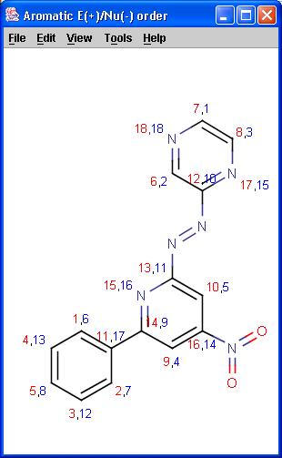 | 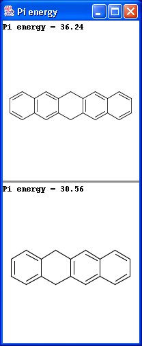 | 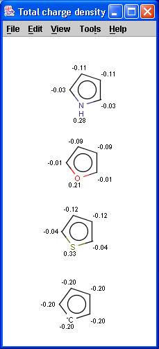 |
Hydrogen Bond Donor-Acceptor calculates atomic hydrogen bond donor and acceptor inclination. Atomic data and overall hydrogen bond donor and acceptor multiplicity are displayed for the input molecule (or its physiological microspecies at a given pH). The weighted average hydrogen bond donor and acceptor multiplicities taken over the microspecies with proportions of their occurrences are computed for different pH-s and displayed in a chart.
| 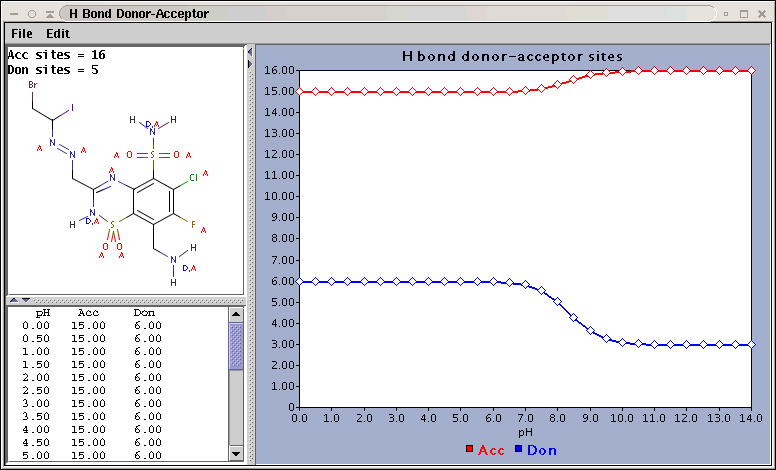 |
Determines the major protonation form at a specified pH.
| 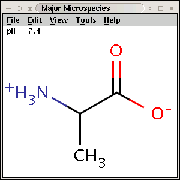 |
The pH can be set in the Options panel, the default pH is
7.4.
The electric field generated by partial charges of a molecule spread through intermolecular cavities and the solvent that the molecule is solved within. The induced partial charge (induced dipole) has a tendency to diminish the external electric field. This phenomenon is called as polarizability. The more stable each ionized site is the more its vicinity is polarizable. This is why atomic polarizability is an important factor in the determination of pKa and why it is considered in our pKa calculation plugin. Atomic polarizability is altered by partial charges of atoms. Our calculation is based on 3, and takes into account the effect of partial charge upon atomic polarizability
| 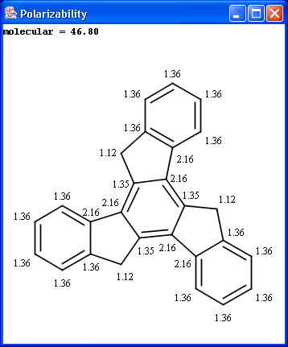 |
Our calculation is based on the atomic method proposed by Viswanadhan at al.1. Molar refractivity is strongly related to the volume of the molecules and to London dispersive forces that has important effect in drug-receptor interaction.
| 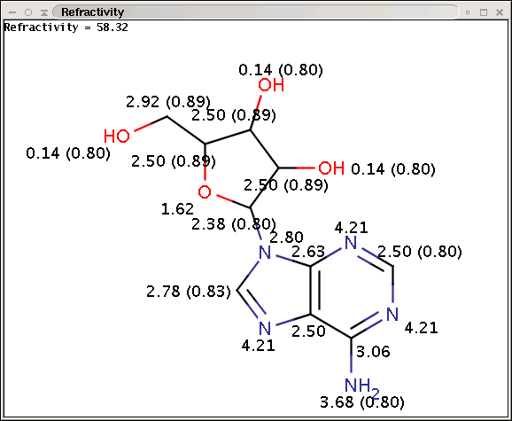 |
The numbers in brackets refer to the refractivity sums of implicit H atoms.
The topology analysis plugin provides characteristic values related to the topological structure of a molecule.
Simple
Ring
Path based
Distance based
Other
| 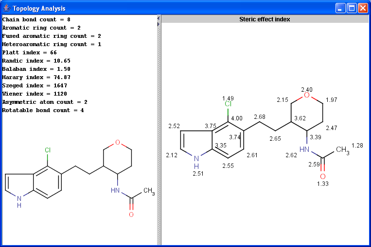 |
Gross charge of an ionizable molecule is zero at certain pH. This pH is called as isoelectric point. Isoelectric point plugin calculates gross charge distribution of a molecule as function of pH.
| 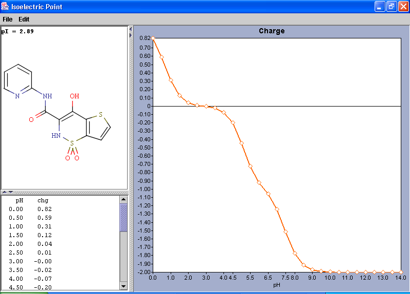 |
All resonance structures of a molecule are generated. The major contributors of the resonance structures can be generated separately. For example the next three structures are the major resonance contributors of diazomethane.
| 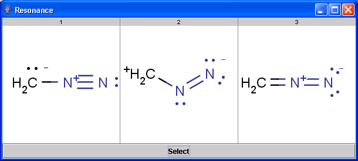 |
All tautomer structures of a molecule are generated. For example the next six structures are tautomers of pyrimidine-2,4-diol.
| 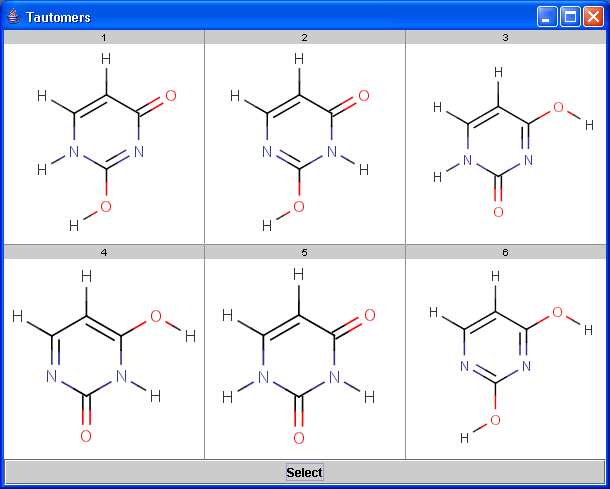 |
Copyright © 1998-2006 ChemAxon Ltd.